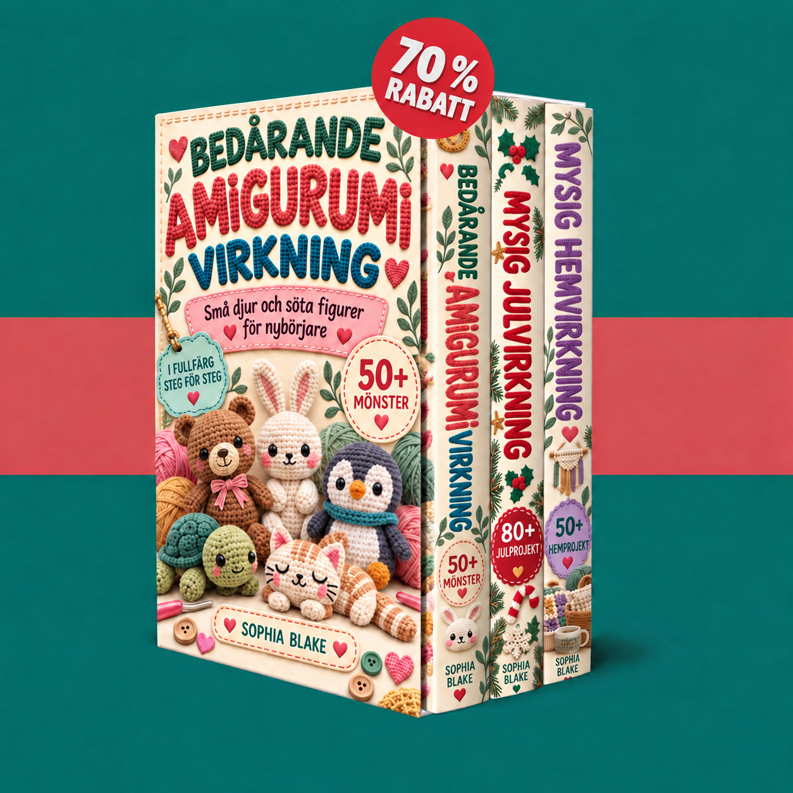

Din tillgång är bekräftad. Upptäck dina tre virkböcker och börja med små djur, juldekorationer eller mysiga projekt för ditt hem.

Dina virkböcker laddas…
Aktivera JavaScript för att använda medlemsområdet. Du kan också öppna dina PDF-filer direkt via länkarna nedan.